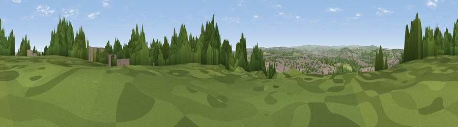

Viewpoint near Whiston
#18942 in England · top 24% of its area beats it · near Whiston · footpathWhere it is
The exact computed spot (SK 43275 90825). Click the marker for map links.
Public access: a public right of way passes within 23 m of this spot. Computed from Natural England's CRoW access layer and OpenStreetMap rights of way — not the legal definitive map. Always verify locally.
The view, rendered

A 360° render of this exact spot computed from the terrain model, tree cover and land cover — summer colours, afternoon light, calibrated against photographs of famous viewpoints. Real trees, hedges and buildings will differ in detail.
The panorama
Grey silhouette: terrain skyline in each direction (720 bearings, Earth curvature and refraction included). Dashed green: skyline with trees (+15 m) and buildings (+8 m) as obstacles. Blue strip: how far the ground is visible on each bearing.
Where the view opens
Wedge length = distance to the farthest visible ground on that bearing (vegetation-aware). Rings at 10, 25 and 50 km.
What fills the view
58% woodland · 26% built-up · 11% grassland · 5% cropland
Angular shares of the visible panorama (visual magnitude), not map area. Landscape diversity 0.47 (0–1 Shannon).
Key numbers
More beautiful places nearby
The staircase of upgrades: each row has a higher view potential than everything closer. Driving times are estimates from straight-line distance, calibrated against real road routing — check an actual route before setting out.
| Place | Direction | Drive | Score |
|---|---|---|---|
| Viewpoint near Rotherham | NNW · 1 km | ~2 min | 54.5 |
| Viewpoint near Upper Haugh | NNW · 8 km | ~16 min | 56.8 |
| Viewpoint near Ridgeway | SSW · 9 km | ~18 min | 67.6 |
| Viewpoint near Maltby | E · 11 km | ~21 min | 70.7 |
| Viewpoint near Whitley | WNW · 12 km | ~23 min | 72.1 |
| Viewpoint near Wharncliffe Side | WNW · 13 km | ~24 min | 75.2 |
| Viewpoint near Greenfield | WNW · 45 km | ~65 min | 76.0 |
| Wild Bank | W · 45 km | ~65 min | 76.2 |
53.41247, -1.35043 · source: screening · position refined by local search. Computed location — check access rights before visiting.